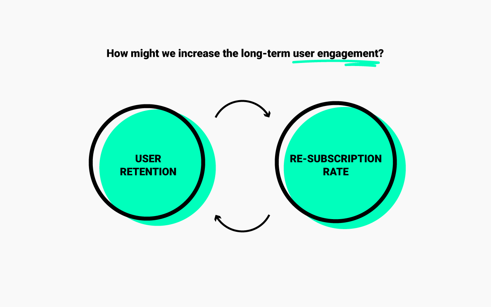
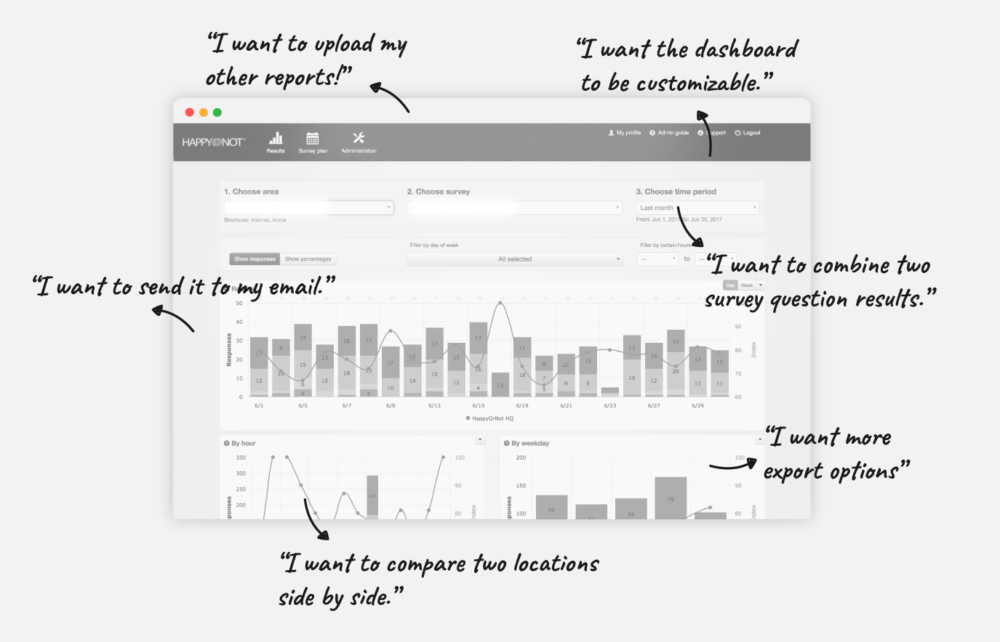
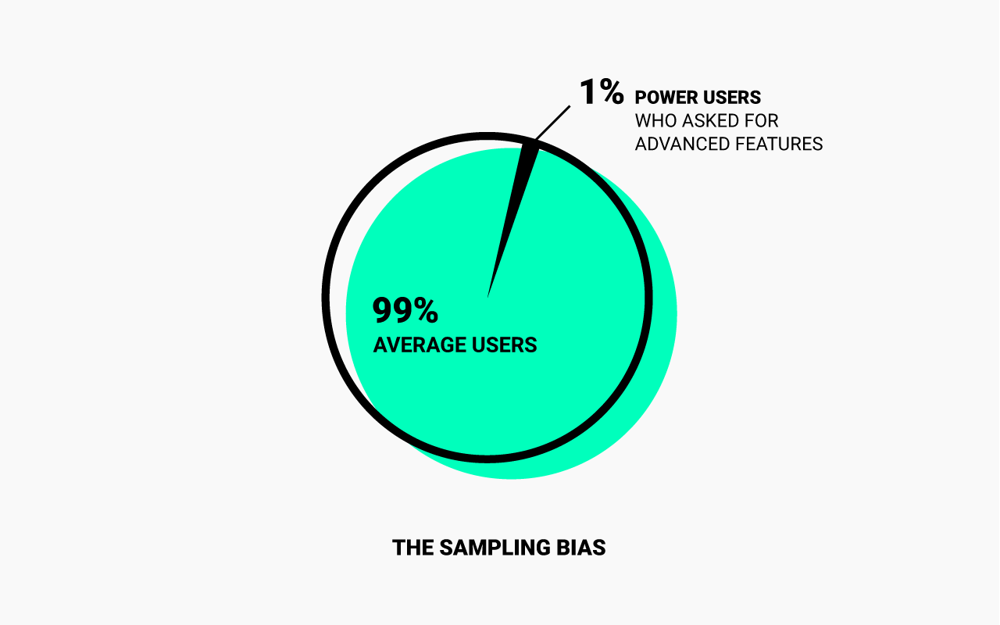
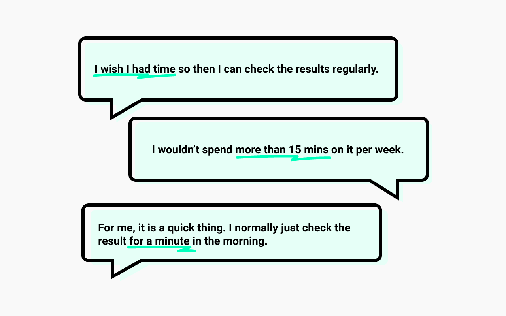
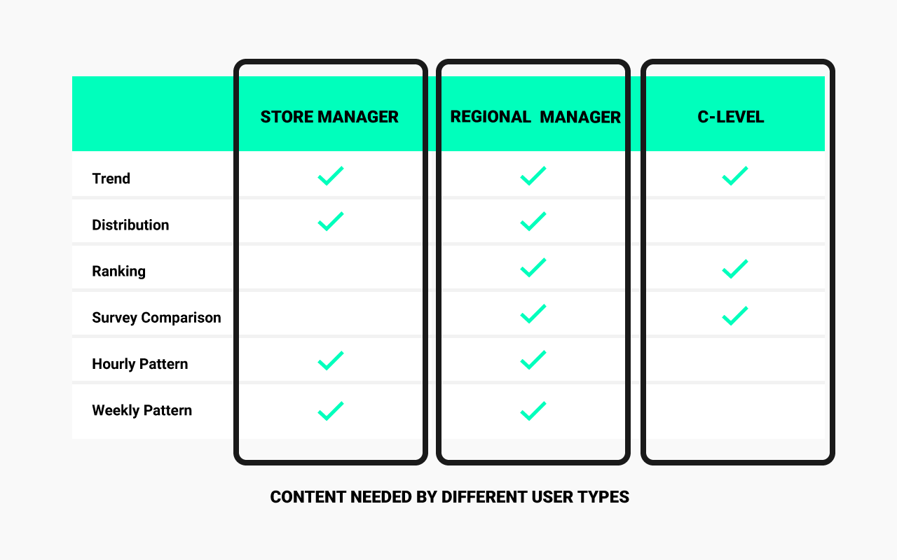
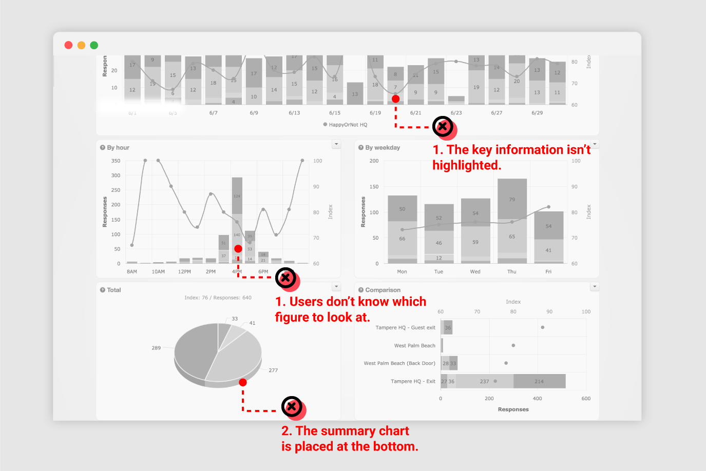

Project Background
To reimagine the world’s NO.1 instant feedback service.
As the global leader in instant customer feedback reporting, HappyOrNot provides service for many of the world’s largest corporations including Microsoft, Walmart, and McDonald. To build the cornerstone of its larger global success, the company decided to redesign its data dashboard in spring 2017.

Problem Space
How might we increase the long-term user engagement?
HappyOrNot used to be a product-centered company in its early years despite its subscription-based business model. At the time, the sales performance of the devices played a vital role in the company’s revenue. However, as the client base grows, converting the existing customers into recurring ones became more important than ever. To achieve the goal, the reporting dashboard was set to be rebuilt as the foundation of the company’s global business expansion.
Initial Research
On the surface, users just want more advanced features.
By mapping the existing customer feedbacks collected by PMs and customer service, I spotted the most requested change to be adding more advanced features. Those features include “export the dashboard to more formats”, “total customization of the dashboard”, and “import other KPIs into the dashboard”.
Be mindful of sampling bias by focusing on the common use cases.
But I soon realized that those requests mostly came from power users, who are statistically less than 1% of the total user group. Since the goal of the project was to increase the user engagement, we should be focusing on the majority of the users, aka the average users. I created a spreadsheet to ensure that the research sample covers all the subsets of roles, business sectors and countries to avoid sampling bias. In the end, I was able to interview and observe 12 users from 8 countries and 10 companies.
Contextual Inquiries
Lacking complexing features isn’t the pain. Poor UX is.
Quite opposite to what power users are previously reporting, the average users enjoy the dashboard being simple. They don’t want the design to be more complexing, instead, they want a simple but smoother experience. By conducting contextual inquiry where I got the chance to observe how they use the system in the actual work setting, I was able to collect the insights which set the stepping stone of my design work.
▸ Insight 1
Retail managers are super busy at work and customer feedback isn’t their priority.
The common thing that I found through contacting and observing the retail managers was that they are extremely busy at work. Especially as to the store managers who actually come to work at the store on a daily basis, they are “running” all over the place to fix issues right on the spot. For them, customer satisfaction is a secondary task comparing to sales performance, and they wouldn’t spend much time on it.
This means, the experience should be extremely efficient and light-weight.
▸ Insight 2
Different Type of users need different content.
Another thing that I observed is that users would have to go to different pages to get all the needed information they want. And for store managers, regional managers, HR managers, the content needed is completely different. That’s why some of the users were even suggesting that the dashboard should support customization. That way, all types of users can get the information they want without switching back and force between multiple pages.
This means, we should provide customized views for different types of users.
▸ Insight 3
The existing dashboard is not designed to be scan-friendly.
Despite users’ need for efficiency, the existing dashboard didn’t provide a scan-friendly experience. Instead, many of the breakdowns that I observed from the contextual inquiry were related to the browsing experiencing:
1.The charts are in the wrong order.
One thing that I observed while users walk me through their experience was that they often times started from the pie chart located at the bottom, which breaks users’ first impression of the dashboard.
2. Key figures are not highlighted.
Another findings from the observation is that most of users tend to focus on the summary charts where the key numbers are very easy to be spotted. On contrast, those charts with much detailed information are often times forgotten by average users.
This means, we need to reorder the charts and highlight the key figures to make the view more scan-friendly.